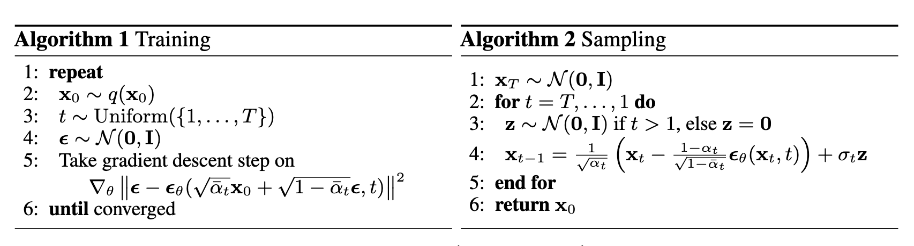
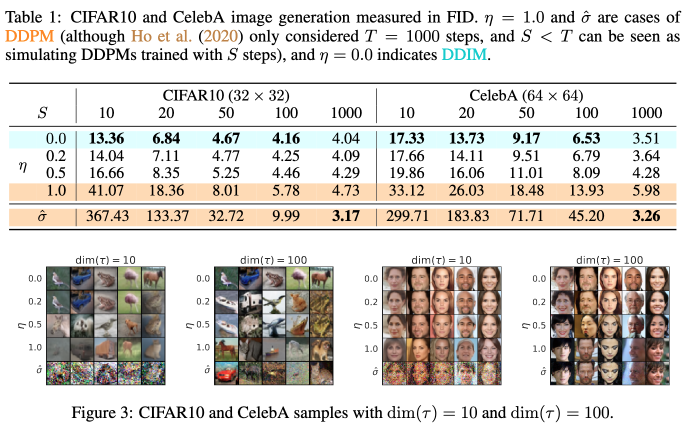
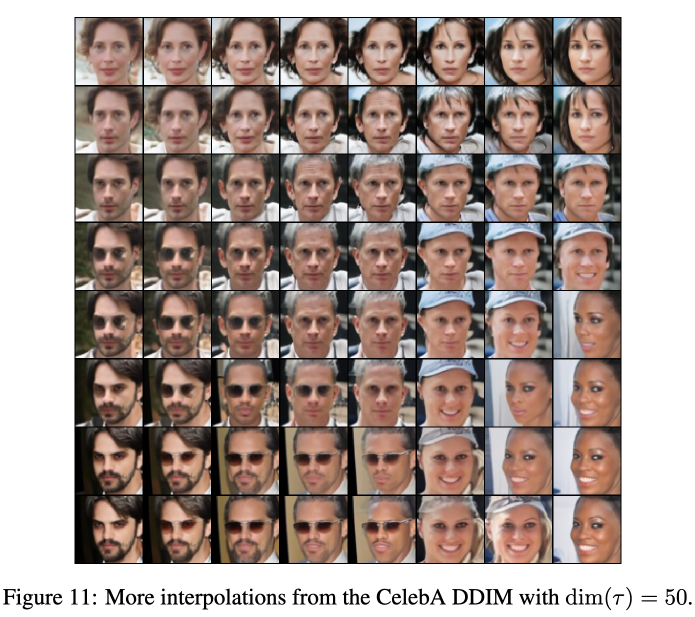

DDPM, DDIM
A central problem in machine learning, especially in generative models, involves modeling complex data-sets using highly flexible families of probability distributions in which learning, sampling, inference, and evaluation are still analytically or computationally tractable. In this post, I mainly summarized the basic concepts of diffusion models, their followup optimizations and applications.
Diffusion models is a class of generative models and it is first proposed in
The diffusion model formulated the learned data distribution as \(p_\theta(x_0):=\int p_\theta(x_{0:T})dx_{1:T}\), where \(x_1, x_2, \cdots, x_T\) are latent variables of the same dimensionality as the real data \(x_0\sim q(x_0)\). The forward process is a Markov chain and transition from \(x_t\)’s to $x_{t+1}$’s follows multivariate Gaussian distributon. Therefore, the joint distribution of latent variables ($x_{1:T}$) given the real data $x_0$ follows
\[\begin{equation}\label{eq:diff_model_origin} q\left(\mathbf{x}_{1: T} \mid \mathbf{x}_0\right):=\prod_{t=1}^T q\left(\mathbf{x}_t \mid \mathbf{x}_{t-1}\right), \quad q\left(\mathbf{x}_t \mid \mathbf{x}_{t-1}\right):=\mathcal{N}\left(\mathbf{x}_t ; \sqrt{1-\beta_t} \mathbf{x}_{t-1}, \beta_t \mathbf{I}\right). \end{equation}\]Remark:
As mentioned in
$(*)$ The summation of two uncorrelated multivariate normal distribution, denoted as $\mathcal{N}(\mathbf{\mu_1,\sigma_1^2I})$ and $\mathcal{N}(\mathbf{\mu_2,\sigma_2^2I})$, is still a multivariate normal distribution, $\mathcal{N}(\mathbf{\mu_1 + \mu_1,(\sigma_1^2+\sigma_2^2)I})$(detail proof).
Usually, we can afford a larger update step when the sample gets noisier, so $\beta_1 < \beta_2 < \cdots < \beta_T$ and therefore $\bar{\alpha}_1 > \bar{\alpha}_2>\cdots>\bar{\alpha}_T$.
Ideally, if we know $q(\mathbf{x}_{t-1} | \mathbf{x}_t)$, then we can gradually remove noise from the noise-injected samples and recover original picture. However, this conditional distribution is not readily available and its computation requires the whole dataset. To be more specific,
\[\begin{equation}\label{eq:imprac_cond_prob_expr} q(\mathbf{x}_{t-1}|\mathbf{x}_t)=\frac{q(\mathbf{x}_{t-1},\mathbf{x}_t)}{q(\mathbf{x}_t)}=q(\mathbf{x}_t|\mathbf{x}_{t-1})\frac{q(\mathbf{x}_{t-1})}{q(\mathbf{x}_t)}=q(\mathbf{x}_t|\mathbf{x}_{t-1})\frac{\int_{\mathbf{x}_0}q(\mathbf{x}_{t-1}|\mathbf{x}_0)\text{d}\mathbf{x}_0}{\int_{\mathbf{x}_0}q(\mathbf{x}_t|\mathbf{x}_0)\text{d}\mathbf{x}_0}. \end{equation}\]To compute the conditional distribution $q(x_{t-1}| x_t)$, we need to integrate the last expression of Eq. (\ref{eq:imprac_cond_prob_expr}) which is too expansive in practice. Therefore, we want to use the diffusion model $p_\theta(x_{t-1}| x_t)$ to learn and approximate the real conditional distribution. Notice that if $\beta_t$ is small enough, $q(x_{t-1}| x_t)$ will also be Gaussian(note). The joint distribution of diffusion model can be written as
\[\begin{equation}\label{eq:dm_joint_dist} p_\theta\left(\mathbf{x}_{0: T}\right)=p\left(\mathbf{x}_T\right) \prod_{t=1}^T p_\theta\left(\mathbf{x}_{t-1} \mid \mathbf{x}_t\right) \quad p_\theta\left(\mathbf{x}_{t-1} \mid \mathbf{x}_t\right)=\mathcal{N}\left(\mathbf{x}_{t-1} ; \boldsymbol{\mu}_\theta\left(\mathbf{x}_t, t\right), \mathbf{\Sigma}_\theta\left(\mathbf{x}_t, t\right)\right). \end{equation}\]With this distribution, we can sample a random example from isotropic Gaussian distribution and expect this reverse process can gradually transform it into sample that follows the distribution of $p_\theta(x_0)$ which approximate $q(x_0)$.
The loss function for training the diffusion model is the usual variational bound on negative log likelihood and here we present a quick deduction:
\[\begin{align*} \log p_\theta(x_0) =& \log\int_{x_{1:T}}p(x_{0:T})\mathrm{d}x_{1:T} \\ =& \log\int_{x_{1:T}}p(x_{0:T})\frac{q(x_{1:T}|x_0)}{q(x_{1:T}|x_0)}\mathrm{d}x_{1:T} \\ =& \log\mathbb{E}_{q(x_{1:T}|x_0)}\left[\frac{p(x_{0:T})}{q(x_{1:T}|x_0)}\right]\\ \geq&\mathbb{E}_{q(x_{1:T}|x_0)}\left(\log\left[\frac{p(x_{0:T})}{q(x_{1:T}|x_0)}\right]\right). \end{align*}\]Therefore, the expectation of negative log likelihood function is lower bounded by variational lower bound as follows.
\[\begin{align*} \mathbb{E}_{q(x_0)}\left[-\log p_\theta(x_0)\right] \geq & \mathbb{E}_{q(x_0)}\left[-\mathbb{E}_{q(x_{1:T}|x_0)}\left(\log\left[\frac{p(x_{0:T})}{q(x_{1:T}|x_0)}\right]\right)\right] \\ =& -\mathbb{E}_{q(x_{0:T})}\left(\log\left[\frac{p(x_{0:T})}{q(x_{1:T}|x_0)}\right]\right)\\ =&: L_\text{VLB}. \end{align*}\]To convert each term in the equation to be analytically computable, the objective can be further rewritten to be a combination of several KL-divergence and entropy terms (See the detailed step-by-step process in Appendix B in
In short, we can split the variational lower bound into $(T+1)$ components and labeled them as follows:
\[\begin{aligned} L_{\mathrm{VLB}} & =L_T+L_{T-1}+\cdots+L_0 \\ \text { where } L_T & =D_{\mathrm{KL}}\left(q\left(\mathbf{x}_T \mid \mathbf{x}_0\right) \| p_\theta\left(\mathbf{x}_T\right)\right), \\ L_t & =D_{\mathrm{KL}}\left(q\left(\mathbf{x}_t \mid \mathbf{x}_{t+1}, \mathbf{x}_0\right) \| p_\theta\left(\mathbf{x}_t \mid \mathbf{x}_{t+1}\right)\right) \text { for } 1 \leq t \leq T-1, \\ L_0 & =-\log p_\theta\left(\mathbf{x}_0 \mid \mathbf{x}_1\right). \end{aligned}\]In this above decomposition,
Next, we show that \(q\left(\mathbf{x}_t \mid \mathbf{x}_{t+1}, \mathbf{x}_0 \right)\) can be computed in closed form even though \(q\left(\mathbf{x}_t \mid \mathbf{x}_{t+1} \right)\) can’t.
\[\begin{align} q\left(\mathbf{x}_{t-1} \mid \mathbf{x}_t, \mathbf{x}_0\right) & =q\left(\mathbf{x}_t \mid \mathbf{x}_{t-1}, \mathbf{x}_0\right) \frac{q\left(\mathbf{x}_{t-1} \mid \mathbf{x}_0\right)}{q\left(\mathbf{x}_t \mid \mathbf{x}_0\right)}\nonumber \\ & \propto \exp \left(-\frac{1}{2}\left(\frac{\left(\mathbf{x}_t-\sqrt{\alpha_t} \mathbf{x}_{t-1}\right)^2}{\beta_t}+\frac{\left(\mathbf{x}_{t-1}-\sqrt{\bar{\alpha}_{t-1}} \mathbf{x}_0\right)^2}{1-\bar{\alpha}_{t-1}}-\frac{\left(\mathbf{x}_t-\sqrt{\bar{\alpha}_t} \mathbf{x}_0\right)^2}{1-\bar{\alpha}_t}\right)\right)\nonumber \\ & =\exp \left(-\frac{1}{2}\left(\frac{\mathbf{x}_t^2-2 \sqrt{\alpha_t} \mathbf{x}_t \mathbf{x}_{t-1}+\alpha_t \mathbf{x}_{t-1}^2}{\beta_t}+\frac{\mathbf{x}_{t-1}^2-2 \sqrt{\bar{\alpha}_{t-1}} \mathbf{x}_0 \mathbf{x}_{t-1}+\bar{\alpha}_{t-1} \mathbf{x}_0^2}{1-\bar{\alpha}_{t-1}}-\frac{\left(\mathbf{x}_t-\sqrt{\bar{\alpha}_t} \mathbf{x}_0\right)^2}{1-\bar{\alpha}_t}\right)\right)\nonumber \\ & =\exp \left(-\frac{1}{2}\left(\left(\frac{\alpha_t}{\beta_t}+\frac{1}{1-\bar{\alpha}_{t-1}}\right) \mathbf{x}_{t-1}^2-\left(\frac{2 \sqrt{\alpha_t}}{\beta_t} \mathbf{x}_t+\frac{2 \sqrt{\bar{\alpha}_{t-1}}}{1-\bar{\alpha}_{t-1}} \mathbf{x}_0\right) \mathbf{x}_{t-1}+C\left(\mathbf{x}_t, \mathbf{x}_0\right)\right)\right) \ \end{align}\]With above deduction, we observed that conditional distribution \(q\left(\mathbf{x}_{t-1} \mid \mathbf{x}_t, \mathbf{x}_0\right)\) is also a Gaussian distribution and we can organize it into standard multivariate normal distribution form like \(q\left(\mathbf{x}_{t-1} \mid \mathbf{x}_t, \mathbf{x}_0\right)=\mathcal{N}\left(x_{t-1};\tilde{\mu}(x_t,x_0), \tilde{\beta}_t\mathbf{I}\right)\). Notice that \(ax^2+bx+c =\frac{1}{1/a}\left(x^2+\frac{b}{a}x+\frac{c}{a}\right)=\frac{1}{1/a}\left((x+\frac{b}{2a})^2+\text{ const }\right)\), the \(\tilde{\mu}\) and \(\tilde{\beta}_t\) can be computed as follows,
\[\begin{align} \tilde{\beta}_t &= 1/\left(\frac{\alpha_t}{\beta_t}+\frac{1}{1-\bar{\alpha}_{t-1}}\right)=\frac{1-\bar{\alpha}_{t-1}}{1-\bar{\alpha}_t}\beta_t\label{eq:standard_form_beta_t},\\ \tilde{\mu}(x_t,x_0) &= \left(\frac{\sqrt{\alpha_t}}{\beta_t} \mathbf{x}_t+\frac{\sqrt{\bar{\alpha}_{t-1}}}{1-\bar{\alpha}_{t-1}} \mathbf{x}_0\right) /\left(\frac{\alpha_t}{\beta_t}+\frac{1}{1-\bar{\alpha}_{t-1}}\right)\nonumber\\ &= \frac{\sqrt{\alpha_t}\left(1-\bar{\alpha}_{t-1}\right)}{1-\bar{\alpha}_t} \mathbf{x}_t+\frac{\sqrt{\bar{\alpha}_{t-1}} \beta_t}{1-\bar{\alpha}_t} \mathbf{x}_0\label{eq:standard_form_mu_t}. \end{align}\]Recall the relation between \(x_t\) and \(x_0\) deduced from Eq. \ref{eq:xt_x0_relation}, the Eq. \ref{eq:standard_form_mu_t} can be further rewrited as follows:
\[\begin{aligned} \tilde{\boldsymbol{\mu}}_t & =\frac{\sqrt{\alpha_t}\left(1-\bar{\alpha}_{t-1}\right)}{1-\bar{\alpha}_t} \mathbf{x}_t+\frac{\sqrt{\bar{\alpha}_{t-1}} \beta_t}{1-\bar{\alpha}_t} \frac{1}{\sqrt{\bar{\alpha}_t}}\left(\mathbf{x}_t-\sqrt{1-\bar{\alpha}_t} \epsilon_t\right) \\ & =\frac{1}{\sqrt{\alpha_t}}\left(\mathrm{x}_t-\frac{1-\alpha_t}{\sqrt{1-\bar{\alpha}_t}} \epsilon_t\right) \end{aligned}\]Recall our previous decomposition of variational lower bound loss, we have closed form computation of real data distribution (i.e. \(q(x_T\mid x_0)\) and \(q(x_t\mid x_{t+1}, x_0)\)), we still need a parameterization of \(p_\theta(x_t\mid x_{t+1})\). As we discussed previously, when \(\beta_t\) is small enough, we can approximate \(q(x_t\mid x_{t+1})\) by the Gaussian distribution \(p_\theta\left(\mathbf{x}_{t-1} \mid \mathbf{x}_t\right)=\mathcal{N}\left(\mathbf{x}_{t-1} ; \boldsymbol{\mu}_\theta\left(\mathbf{x}_t, t\right), \boldsymbol{\Sigma}_\theta\left(\mathbf{x}_t, t\right)\right)\). We expect that the training process can let \(\mu_\theta\) to predict \(\tilde{\mu}_t\). With this parameterization, each component of loss function \(L_t=D_{\mathrm{KL}}\left(q\left(\mathbf{x}_t \mid \mathbf{x}_{t+1}, \mathbf{x}_0\right) \| p_\theta\left(\mathbf{x}_t \mid \mathbf{x}_{t+1}\right)\right)\) is the KL divergence between two multivariate Gaussian distributions and has a relatively simple closed form. The loss term \(L_t\) become
\[\begin{align} L_t =& D_{\mathrm{KL}}\left(q\left(\mathbf{x}_t \mid \mathbf{x}_{t+1}, \mathbf{x}_0\right) \| p_\theta\left(\mathbf{x}_t \mid \mathbf{x}_{t+1}\right)\right)$ \nonumber\\ =& \frac{1}{2}\left[\log\frac{| \boldsymbol{\Sigma}_\theta\left(\mathbf{x}_t, t\right)|}{|\tilde{\beta}_t \mathbf{I}|}+(\tilde{\mu}_t-\mu_\theta)^T\boldsymbol{\Sigma}_\theta\left(\mathbf{x}_t, t\right)^{-1}(\tilde{\mu}_t-\mu_\theta)+\text{tr}\left\{\boldsymbol{\Sigma}_\theta\left(\mathbf{x}_t, t\right)^{-1}\tilde{\beta}_t \mathbf{I}\right\}\right].\label{eq:lt_before_simple_sigma} \end{align}\]In practice, we can further simplify the loss function Eq. (\ref{eq:lt_before_simple_sigma}) by predefine the variancen matrix as \(\boldsymbol{\Sigma}_\theta\left(\mathbf{x}_t, t\right)=\sigma_t^2\mathbf{I}\) and, experimentally, \(\sigma_t^2=\tilde{\beta}_t=\frac{1-\bar{\alpha}_{t-1}}{1-\bar{\alpha_t}}\beta_t\) or \(\sigma^2_t=\beta_t\) had similar results. Therefore, we can write:
\[\begin{equation}\label{eq:lt_mu_t_not_param} L_{t-1}=\mathbb{E}_q\left[\frac{1}{2 \sigma_t^2}\left\|\tilde{\boldsymbol{\mu}}_t\left(\mathbf{x}_t, \mathbf{x}_0\right)-\boldsymbol{\mu}_\theta\left(\mathbf{x}_t, t\right)\right\|^2\right]+C. \end{equation}\]Furthermore, \(\mu_\theta\) is further parameterized in section 3.2 of
In this parameterization, the neural network will be used to approximate the \(\epsilon_\theta\) instead of \(\mu_\theta\) directly. This parameterization further simplify \(L_{t-1}\) in Eq. (\ref{eq:lt_mu_t_not_param}) into
\[\begin{equation} L_{t-1} = \mathbb{E}_{\mathbf{x}_0, \boldsymbol{\epsilon}}\left[\frac{\beta_t^2}{2 \sigma_t^2 \alpha_t\left(1-\bar{\alpha}_t\right)}\left\|\boldsymbol{\epsilon}-\boldsymbol{\epsilon}_\theta\left(\sqrt{\bar{\alpha}_t} \mathbf{x}_0+\sqrt{1-\bar{\alpha}_t} \boldsymbol{\epsilon}, t\right)\right\|^2\right]. \end{equation}\]To this point, every term in \(L_\text{VLB}\) can be computed in explicit closed form and is ready for training. However, empirically,
This simplification enable us to compute arbitrary time steps for each sample \(x_0\), instead of computing the entire series as in \(L_\text{VLB}\). The entire DDPM algorithm is show as follows.

Side notes: The timestep is also an input to the neural network \(\epsilon_\theta(x_t, t)\) and it is typically encoded into some vector. For instance, in DDPM, integer timesteps are encoded into floats vector through sinusoidal function.
Though diffusion models like DDPM
The deduction of the loss function only depends on \(q(x_t\mid x_0)\) and the sampling process only depends on \(p_\theta(x_{t-1}\mid x_t)\). To be more specific, the loss function remains the same form as long as the relation in Eq. (\ref{eq:xt_x0_relation}) still hold.
A DDPM trained on \(\{\alpha_t\}_{t=1}^N\) has, in fact, included the “knowledge” for training a DDPM with \(\{\alpha_\tau\}\subset\{\alpha_t\}_{t=1}^N\). This can be naturally observed from training process of the simplified version of loss function. It gives us a intuition that we can use a subset of parameters during the sampling process and reduce the computational cost.
Based on the first observation, we can build different conditional distributions \(q(x_t \mid x_{t+1}, x_0)\) that has the same \(q(x_t\mid x_0)\) distribution. Same marginal distribution \(q(x_t\mid x_0)\) results in the same loss function and different choices of conditional distribution \(q(x_t \mid x_{t+1}, x_0)\) results in different sampling choices. In fact, without the constraint of \(q(x_{t+1}\mid x_t)\) as in Eq. (\ref{eq:diff_model_origin}), we have a broader choice(i.e. a larger solution space) of \(q(x_t \mid x_{t+1}, x_0)\).
Based on the second observation, the sampling process can only use a subset of steps used in training process. By reducing the updating steps, the sampling process can greatly speed-up.
The key observation here is that the DDPM loss function only deppends on the marginals \(q(x_t\mid x_0)\), but not directly on the joint distribution \(q(x_{1:T}\mid x_0)\) or transition distribution \(q(x_t\mid x_{t-1})\). Follow the deduction in
To maintain the same loss function, we need the same marginal distribution \(q(x_t\mid x_0)=\mathcal{N}(\sqrt{\bar{\alpha}_t}x_0, (1-\bar{\alpha}_t)\mathbf{I})\). The corresponded sampling process formula is \(x_t=\sqrt{\bar{\alpha}_2}x_0+\sqrt{1-\bar{\alpha}_t}\epsilon_1\).
Assume \(q(x_{t-1} \mid x_t, x_0)=\mathcal{N}(x_{t-1}; k_t x_t+\lambda_t x_0, \sigma^2\mathbf{I})\), where \(k_t\) and \(\lambda_t\) are coefficient to be decided. The sampling process with \(q(x_{t-1} \mid x_t, x_0)\) is \(x_{t-1} = k_t x_t+\lambda_t x_0 + \sigma_t\epsilon_2\).
By combining the marginal distribution \(q(x_t\mid x_0)\) and assumed form of \(q(x_{t-1} \mid x_t, x_0)\), we can compute the marginal distribution of \(x_{t-1}\) as follows,
\[\begin{align} x_{t-1} =& k_t x_t + \lambda_t x_0 + \sigma_t \epsilon_2\nonumber\\ =& k_t(\sqrt{\bar{\alpha}_t}x_0+\sqrt{1-\bar{\alpha}_t}\epsilon_1) + \lambda_t x_0 + \sigma_t \epsilon_2\nonumber \\ =& (k_t\sqrt{\bar{\alpha_t}}+\lambda_t)x_0 + (k_t\sqrt{1-\bar{\alpha}_t}\epsilon_1+\sigma_t\epsilon_2)\nonumber\\ =& (k_t\sqrt{\bar{\alpha_t}}+\lambda_t)x_0 + \sqrt{k_t^2(1-\bar{\alpha}_t)+\sigma_t^2}\epsilon.\label{eq:sample_with_undeter_coefs} \end{align}\]Comparing Eq. (\ref{eq:sample_with_undeter_coefs}) with Eq. (\ref{eq:xt_x0_relation}), remember that we need to let the marginal distribution to be the same and \(q(x_{t-1}\mid x_0)=\int_{x_t}q(x_{t-1} \mid x_t, x_0)q(x_t\mid x_0)\mathrm{d}x_t\), we can have the following relation,
\[\begin{align} \sqrt{\bar{\alpha}_{t-1}} &= k_t\sqrt{\bar{\alpha_t}}+\lambda_t,\nonumber\\ \sqrt{1-\bar{\alpha}_{t-1}} &= \sqrt{k_t^2(1-\bar{\alpha}_t)+\sigma_t^2}.\nonumber\\ \end{align}\]There are three variables and only two equation, therefore, we can view \(\sigma_t^2\) as a independent variable and solve that
\[\begin{align} k_t=&\sqrt{\frac{1-\bar{\alpha}_{t-1}-\sigma^2_t}{1-\bar{\alpha}_{t}}},\\ \lambda_t=&\sqrt{\bar{\alpha}_{t-1}} - \sqrt{\frac{(1-\bar{\alpha}_{t-1}-\sigma^2_t)\alpha_t}{1-\bar{\alpha}_{t}}}. \end{align}\]Therefore, we can obtain a family \(\mathcal{Q}\) of inference distribution indexed by \(\{\sigma_t\}_{1:T}\),
\[\begin{equation} q_\sigma\left(\boldsymbol{x}_{t-1} \mid \boldsymbol{x}_t, \boldsymbol{x}_0\right)=\mathcal{N}\left(\sqrt{\bar{\alpha}_{t-1}} \boldsymbol{x}_0+\sqrt{1-\bar{\alpha}_{t-1}-\sigma_t^2} \cdot \frac{\boldsymbol{x}_t-\sqrt{\bar{\alpha}_t} \boldsymbol{x}_0}{\sqrt{1-\bar{\alpha}_t}}, \sigma_t^2 \boldsymbol{I}\right). \end{equation}\]As a result, in the sampling procedure, the updating formula is, \(\begin{equation} \boldsymbol{x}_{t-1}=\sqrt{\bar{\alpha}_{t-1}} \underbrace{\left(\frac{\boldsymbol{x}_t-\sqrt{1-\bar{\alpha}_t} \epsilon_\theta^{(t)}\left(\boldsymbol{x}_t\right)}{\sqrt{\bar{\alpha}_t}}\right)}_{\text {"predicted } \boldsymbol{x}_0 \text { " }}+\underbrace{\sqrt{1-\bar{\alpha}_{t-1}-\sigma_t^2} \cdot \epsilon_\theta^{(t)}\left(\boldsymbol{x}_t\right)}_{\text {"direction pointing to } \boldsymbol{x}_t \text { " }}+\underbrace{\sigma_t \epsilon_t}_{\text {random noise }}. \end{equation}\)
Comparing with DDPM, this is generalized form of generative processes. Since the marginal distribution remains the same, the loss function did not change and the training process is identical. This means that we can use this new generative process with a diffusion model trained in DDPM way and, with different level of \(\sigma_t\), we can generate different image with same initial noise. Among different choices, \(\sigma_t=0\) is a special case in which the generation process is deterministic given the initial noise. This model is called denoising diffusion implicit model since it is an implicit probabilistic model and it is trained with the DDPM objective.
We need to point out that, in our previous discussion, we did not start with \(q(x_t\mid x_{t-1})\) and the sequence \(\{\alpha_t\}\) determined the model. The key observation here is that the training process of DDPM, in its essence, contained the data/processes of training over any subsequence \(\{\alpha_\tau\}\subset\{\alpha_t\}\). This can be observed from the loss functions. The training process over a set of parameter \(\{\alpha_\tau\}\) is
\[\begin{equation} L_{\text {simple }}(\theta):=\mathbb{E}_{\tau, \mathbf{x}_0, \boldsymbol{\epsilon}}\left[\left\|\boldsymbol{\epsilon}-\boldsymbol{\epsilon}_\theta\left(\sqrt{\bar{\alpha}_\tau} \mathbf{x}_0+\sqrt{1-\bar{\alpha}_\tau} \boldsymbol{\epsilon}, \tau\right)\right\|^2\right]. \end{equation}\]Therefore, DDPM trained on \(\{\alpha_t\}\) already incorporated information used to train DDPM on \(\{\alpha_\tau\}\subset\{\alpha_t\}\). When the size of \(\{\alpha_\tau\}\) is much smaller than \(\{\alpha_t\}\), generating samples with the former parameters set will be much faster.
Experiments in DDPM and DDIM paper have quantitatively and qualitatively examined the images generated. Here we review two aspects: the sampling quality and the interpolation result.
In DDIM’s experiment, as the following screenshot taken from it shows, the authors compared results of different number of diffusion steps \(\text{dim}(\tau)\) and different level of noise. The empirical result is that lower noise level \(\sigma_t^2\), the better image quality generated with accelerated diffusion process.

Both DDIM and DDPM examined their performance on interpolation of images. They use the forward process as stochastic encoder to generate embeddings \(x_0\rightarrow x_T, x'_0\rightarrow x'_T\). Then decoding the interploated latent \(\bar{x}_T=f(x_T, x'_T, \alpha)\) where \(\alpha\) represent interpolation parameter(s).
